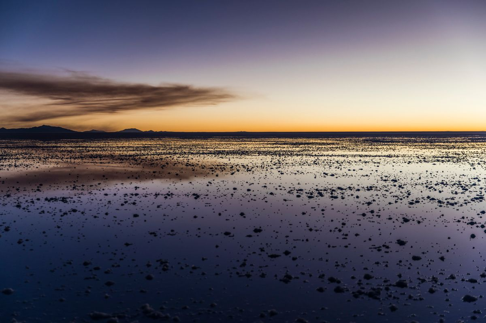
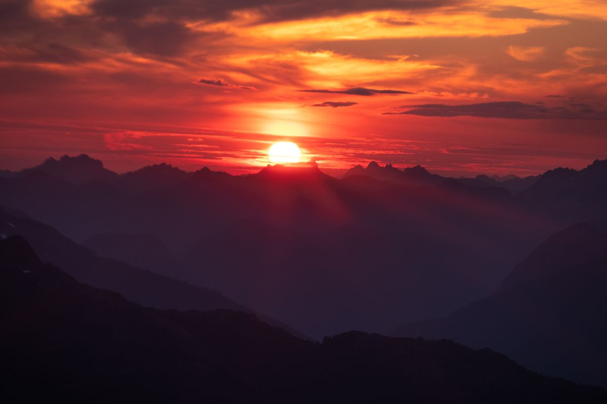
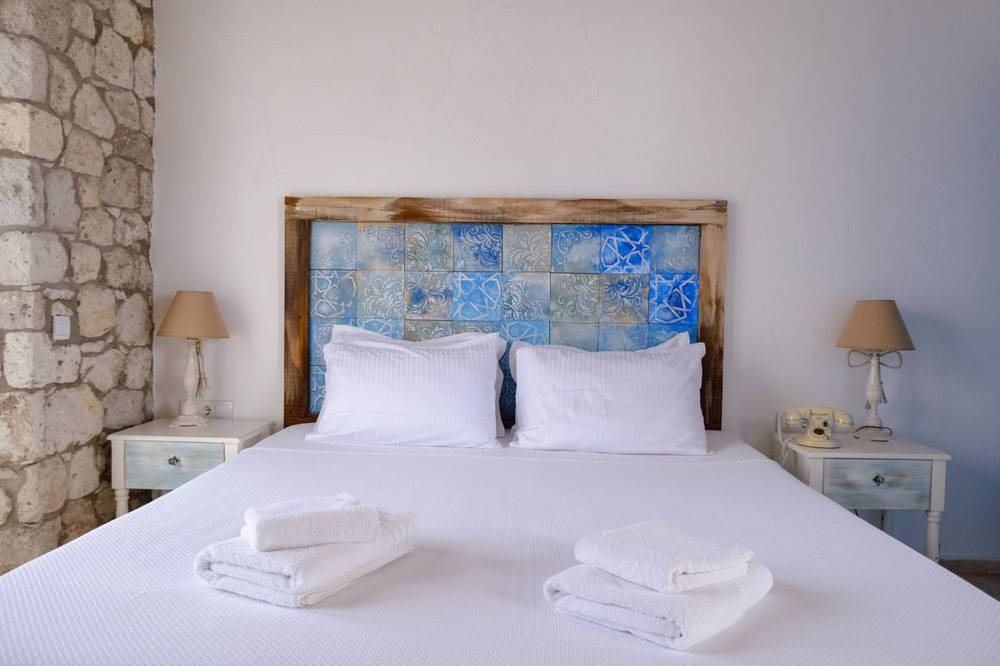
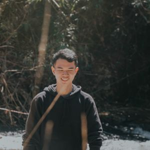
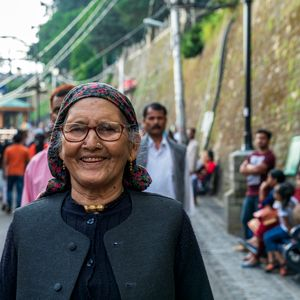
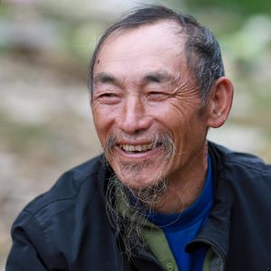
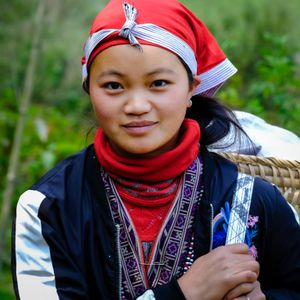

Efecto Espejo
Durante la temporada de lluvias (nov-mar), una fina capa de agua convierte el salar en el espejo natural más grande del mundo.
Ver más →10.582 km² de magia pura en el corazón de Bolivia
Explorar el ParaísoEl Salar de Uyuni es el desierto de sal más grande del mundo, ubicado en el suroeste de Bolivia a 3.656 metros sobre el nivel del mar. Formado hace más de 40.000 años por la evaporación del lago prehistórico Minchín, este espejo natural de 10.582 km² ofrece un paisaje surrealista donde el cielo y la tierra se fusionan en un abrazo infinito.
Durante la temporada de lluvias, una fina capa de agua transforma este vasto desierto blanco en el espejo natural más grande del planeta, creando una ilusión óptica donde el horizonte desaparece y caminar se convierte en flotar entre las nubes.
Conocer la historia completa →
Cuatro vivencias que solo el Salar de Uyuni puede ofrecerte
Durante la temporada de lluvias (nov-mar), una fina capa de agua convierte el salar en el espejo natural más grande del mundo.
Ver más →
Isla cubierta de cactus gigantes Trichocereus que alcanzan hasta 10 metros de altura, rodeada de un mar infinito de sal blanca.
Ver más →
Los atardeceres en el salar pintan el cielo de tonos dorados, rosas y púrpuras inolvidables que se reflejan en el horizonte infinito.
Ver más →
Duerme en hoteles construidos completamente con bloques de sal del desierto, una experiencia única en el mundo entero.
Ver más →
"Caminar sobre el salar durante la temporada de lluvias fue como caminar sobre las nubes. El reflejo del cielo en el agua es algo que nunca olvidaré. Una experiencia que cambió mi perspectiva del mundo."

"Los atardeceres en el Salar de Uyuni son los más hermosos que he visto en toda mi vida. Los colores, el silencio, la inmensidad... Es como estar en otro planeta. Bolivia es mágica."

"Como fotógrafo profesional he viajado por todo el mundo, pero nada me preparó para la belleza del Salar de Uyuni. Cada ángulo es una obra maestra natural. Volveré sin duda."

"El tour de 3 días por el salar, las lagunas de colores y los géiseres fue la mejor experiencia de viaje de mi vida. La hospitalidad boliviana y los paisajes son incomparables."